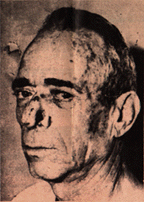
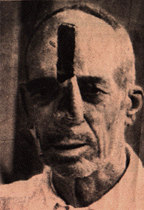

PATIENT HAS A NEW FACE after his nose was rid of cancerous tissue. The operation, described in the panel below, took months to complete.
CANCEROUS tissue
disfigured face of patient, making him self-conscious and reluctant to face
world
INITIAL STEP
in operation involved removal of cancerous tissue. Wide gap in nose
area was left.
FROM forehead,
strip of skin was cut, lifted like guitar string with aid of gauze to avoid
re-attaching.
SKIN STRIP
was detached from upper mooring, twisted and portion transplanted; residue
is restored.
BACK